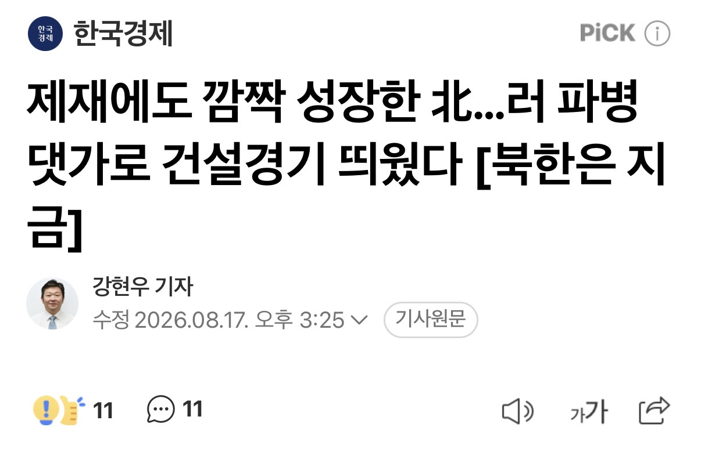
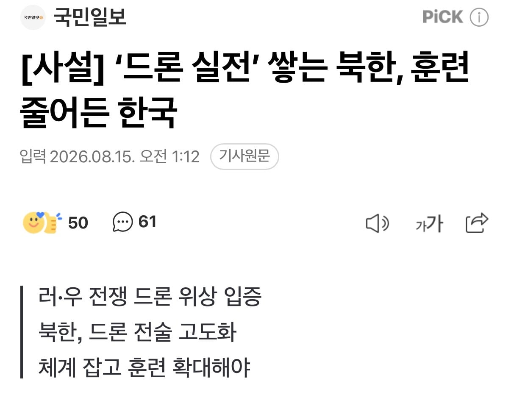
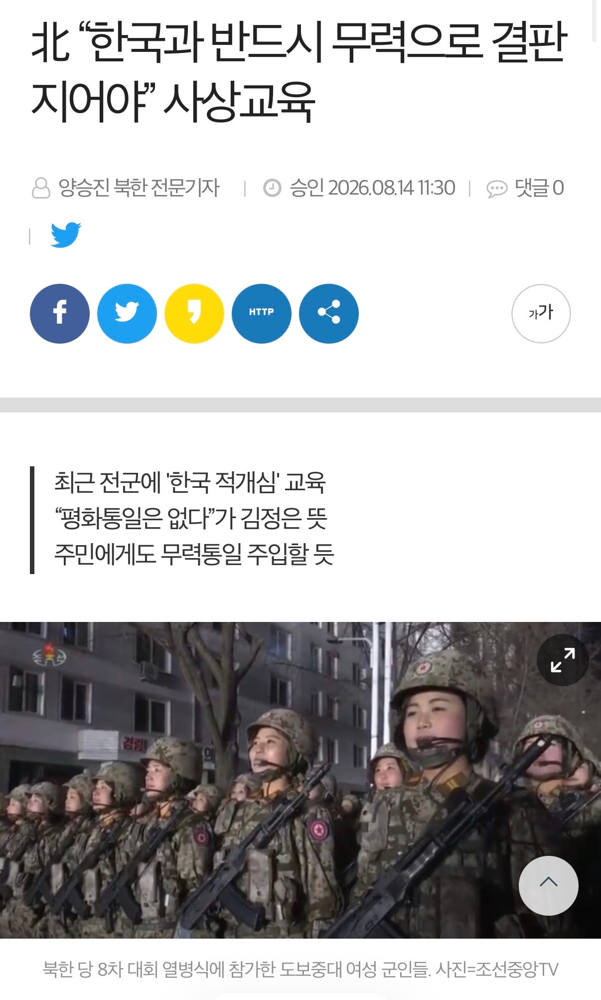

-
러시아의 전폭적인 경제지원
-
우러전에서 쌓은 실전경험
-
주한미군 무기 소진
그 결과…

(중국, 러시아 지원받으면) 남한을 무력통일 할수 있겠다는 자신감을 얻었다고 함.


러시아의 전폭적인 경제지원
우러전에서 쌓은 실전경험
주한미군 무기 소진
그 결과…

(중국, 러시아 지원받으면) 남한을 무력통일 할수 있겠다는 자신감을 얻었다고 함.
댓글
수집 당시 댓글 12개
바람난교수 · 3 일 전
왜 타격감 1도 없지??
한달연봉주당시급8천억원 · 3 일 전
이새끼 콜옵신작 트레일러 존나 감명깊게봤나보네 시발련이
학대파 · 3 일 전
ㅋㅋㅋ 우러전 드론은 북한(중국제) 드론 전에 비하면 진짜 100분의 1도 안될거다. 우린 대응할 방법도 없고 전력도 없고 위에 새끼들처럼 행복회로나 돌리고있는데 지금이야 말로 최고 위기임
o깐따삐야o · 3 일 전
위에 새끼들 wwe니 뭐니 하는거보면 진짜 좆된거 같긴함
YOASOBI · 3 일 전
나도 존나 무서운디
그럼숏쳐 · 3 일 전
우마오당 이랑 정찰총국 간나들이랑 콜라보 한것 같은 느낌이야
초고추장 · 3 일 전
씨팔새끼, 남남북녀 단어 배우더니 삼천기쁨조에 질렸구만?
머드맨 · 3 일 전
원래 좀 살만해지면 딴 생각 들기 시작함 ㅋㅋㅋㅋㅋ
미니미니충수돌기맨 · 3 일 전
향후 대세에 변화는 최소 12년간 없을텐데 12년간 버티기가 과연 먹힐까가 문제지
야식왕치킹 · 3 일 전
언플이지 이란 윗놈들 싹 물갈이된거만봐도 전쟁의지 싹 사라졌을거임
나태한사람 · 3 일 전
개그지새끼들이 왜 자꾸 깝치지? 전쟁은 무조건 돈많은쪽이 이기는건데...
pinotnoir · 3 일 전
위기감 안든다 하는 놈들이 더 문제야 적국이 계속 지원받고 힘 키우는데 무시하면서 니들이 그래봤자지 ㅋㅋ 하다가 기습 맞고 다 죽는다 결국에 이기더라도 그 나라에 니네가 남아있을 거라는 보장이 없단다 이제 전쟁은 절대 빠르고 깔끔하게 끝나지 않음 참호 없는 참호전과 소모전이 계속 될 거고 피해받는 건 국민임